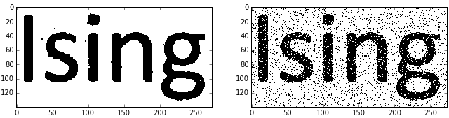
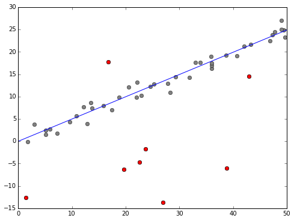

Blog of Matthew Daws
Disjoint Paths
A few notes on paths in graphs: finding the maximum number of edge/vertex disjoint paths, and an application to finding disconnections.
Edge disjoint paths
Consider a graph, for the moment undirected. We wish to find the maximum number of edge disjoint paths from a fixed vertex \(s\) to a fixed vertex \(t\). We can do this with the Max-Flow Min-Cut theorem and the Ford-Fulkerson algorithm, at least in the directed case, but let's specialise this to our case.
Read More →AdaBoost and classification
Motivated by another nice post from Jeremy Kun I've had a play with AdaBoost. Like Jermey I used the "Adult Census Dataset" and then also the "Titanic" dataset. The latter requires some data munging, and some decisions about how to process the data.
Once you understand what AdaBoost does, and how Decision Stumps/Trees work, it seems reasonable to now use scikit-learn (which can often make you seem like a trained monkey, plugging things into your data). It's worth noting that an out the box decision tree works almost perfectly on the "Adult" dataset, but much less well on the Titanic Dataset (where AdaBoost and decision stumps now don't look so bad!)
As ever, Python feels a bit slow for this sort of thing, but also nice because it's interactive, and well aimed at handling data.
Read More →Ising model and image denoising
As a final application of MCMC methods, you can't escape the Ising Model, and it's cute application to denoising images (of a text-like nature).

Read More →Removing outliers
So, linear regression isn't so exciting. What about removing outliers? I do find this, just a little, magical:

We define a model where a data point \( y_i \) can either be from a normal linear regression model, or just a random (normally distributed) number. We then build into our model indicators \( o_i \in \{0,1\} \) to indicate if this is an outlier or not. Then sample the posterior distribution with an MCMC sampler, integrate out the \(o_i\) and you have your line of best fit. Fix \(i\) and integerate out everything but \(o_i\) and you get an estimate of probability the point is an outlier. The above plot shows those points estimated above 90%.
Rest is in an Ipython notebook on GitHub. This also gave me a chance to play with my own modified Gibbs sampler, which works nicely, if I say so myself.
Read More →Regression from a (simple) Bayesian perspective
How might we tackle simple regression from a Bayesian perpsective? Our model will be that we are given points \( (x_i)_{i=1}^n \) (which we assume we know, at least to a very high accuracy) and dependent points \( y_i^{re} = \alpha + \beta x_i \), but we only observe \( y_i \) where \( y_i = y_i^{re} + e_i \) where the \( e_i \) are our "uncertainties" (I like the line: "if they were errors, we would have corrected them!", see footnote 10 of arXiv:1008.4686) usually modelled as iid \( N(0,\sigma^2) \). The likelihood is then
\[ f(y|\alpha,\beta,\sigma) = \prod (2\pi\sigma^2)^{-1/2} \exp\Big( -\frac{1}{2\sigma^2} (y_i - (\alpha + \beta x_i))^2 \Big) \]
Finding the MLE leads to Least Squares Regression. A simple Bayesian approach would be to stick some prior on $\alpha, \beta, \sigma$, but of course, this raises the question of how to do this!
Anyway, another Ipython notebook which develops some of the basic maths, and then uses emcee and the Triangle Plot to make some simulations and draw some plots of posterior distributions.
Read More →Dabbling in Bayesian Statistics
Bayesian statistics appeals to me both because it seems more "philosophically correct" than frequentist arguments (I have this data, and want to make an inference from it, rather than worrying about data which "might" exist, given other circumstances). Also, Bayesian approaches lead to some interesting computational issues, which are interesting in their own right.
TL;DR: In the process of thinking about MCMC methods in sampling from posterior distributions, I became interested in the choice of prior distributions. Emerging from a lot of reading, you can view my IPython Notebook on finding an "invariant" prior: if you have a natural family of transformations on your "data space" which is reflected in transformations in the parameter space, then I argue there's a natural reason to expect certain invariance in the prior.
For a simple example, consider normally distributed data with known variance. If you translate your data by, say, 5 units, then you would expect your inference about the (unknown) mean to also be exactly translated by 5 units (but to otherwise be the same). This leads to a uniform (improper) prior. I treat the case of unknown mean and variance, which leads to the Jeffreys prior, which is regarded as not so great in the 2 parameter case. Hey ho. This was also a good excuse to learn and play with SymPy.
Read More →Enumerate in C++
One of the fun things about C++11 is that minor changes allow you to write somewhat more expressive (aka Pythonic) code.
A common pattern is to iterate over an array while also knowing the index you are at. Python does this with the enumerate keyword:
for index, x in enumerate(container):
print("At {} is {}".format(index, x))
In C++ the idiomatic way to do this is perhaps:
std::vector<int> container;
...
for (int i = 0; i < container.size(); ++i) {
std::cout << "At " << i << " is " << container[i] << "\n";
}
This has its flaws though (and is tedious to type). Using g++, if you have warnings on, -Wall, then you'll see complaint, as the type of container.size() is, typically, of size std::size_t which on my machine is unsigned long long (aka an unsigned 64-bit number). Warnings aside, as int is on my machine a 32-bit unsigned number, we could potentially have problems if the size of container is more than around 2 billion (unlikely, but possible these days).
Jam 2012 Qualification Round
Last one of these for a while. Problem D became an obsession. As ever, links to: Official Contest Analysis and my code on GitHub.
Problem A, Speaking in Tongues: Could be solved with pen and paper, as all the information you need is sneakily in the question.
Read More →